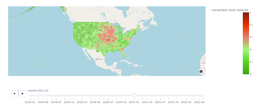

food_dash Documentation
This food_dash is used to prepare supplemental materials for the project titled "Using mobile-phone data to assess racial disparities surrounding unhealthy food reliance during the COVID-19 pandemic".
However, it can also be utilized with datasets that draw similarity to the structure of our dataset - that is - monthly datasets aggregated data at a county level, of which we wish to measure the percent of one variable over the percent of the sum of 2 variables [ie x=a/(a+b)].
The goal is to ultimately plot a dashboard visualizing spatio-temporal elements, with the temporal aspect being monthly, and the spatial aspect being at a county level
Getting Started
Requirements
The following packages are required in order to run use food_dash
>>> pip install pandas
>>> pip install plotly
>>> pip install plotly.express
>>> pip install datetime
>>> pip install urlopen
Installation
The best way to use this is to simply directly use the code provided in execution.ipynb or create a .py or .ipynb similar to that in the food_dash folder. To do so, simply import the functions using
>>> from clean_normalize_data import *
>>> from dashboard_creation import *
If you'd prefer having the file to execute your code outside the food_dash folder, simply do the following:
>>> from food_dash.clean_normalize_data import *
>>> from food_dash.dashboard_creation import *
Quick Usage Overview
Here, we provide a quick overview of how these function works and how you can quickly obtain your spatio-temporal dashboard.
Do note that the datasets that are fed into the preparing_data_for_viz function assumes that the columns for your dates are "date_range_start" and the columns for the counties are called "Counties".
To see how each specific function works, refer to the User Guide tab.
# executing the creation of dashboard here.
from clean_normalize_data import *
from dashboard_creation import *
# This examples creates and saving dashboard for convenience store reliance.
# read your first dataset. In this case, it is the semi-aggregated convenience store visits file
>>> df1=pd.read_csv("data/convenient_store_aggregated_by_county.csv",index_col=False)
# read your second dataset, in this case, the semi-aggregated grocery visits file
>>> df2=pd.read_csv("data/grocery_aggregated_by_county.csv",index_col=False)
# using the preparing data_for_viz_function to clean the data, normalize it, calculate the "convenience store reliance index" and prepare the data for visualization.
>>> data=preparing_data_for_viz(df1=data_convenience,df2=data_fast_food
>>> unhealthy_col_name="convenient store_count",
>>> healthy_col_name="supermarket_count",
>>> desired_col_name="convenient store reliance")
>>> print(data.head(1))
| Month | County | Convenience store reliance |
|--------:|--------:|---------------------------:|
| 2019-01 | "01001" | 0.23885 |
# reading the built-in encoded red-to-green scale
>>> cc_scale=green_red_col_scale()
# reading the county shapefiles
>>> counties=loading_counties_file()
#creating and saving the dashboards.
>>> show_and_save_plot(save_name="dashboard/convenience_store_reliance_plot.html" attribute_name="convenient store reliance",cc_scale=cc_scale,data=data, counties=counties)
The following output is the dashboard produced.
